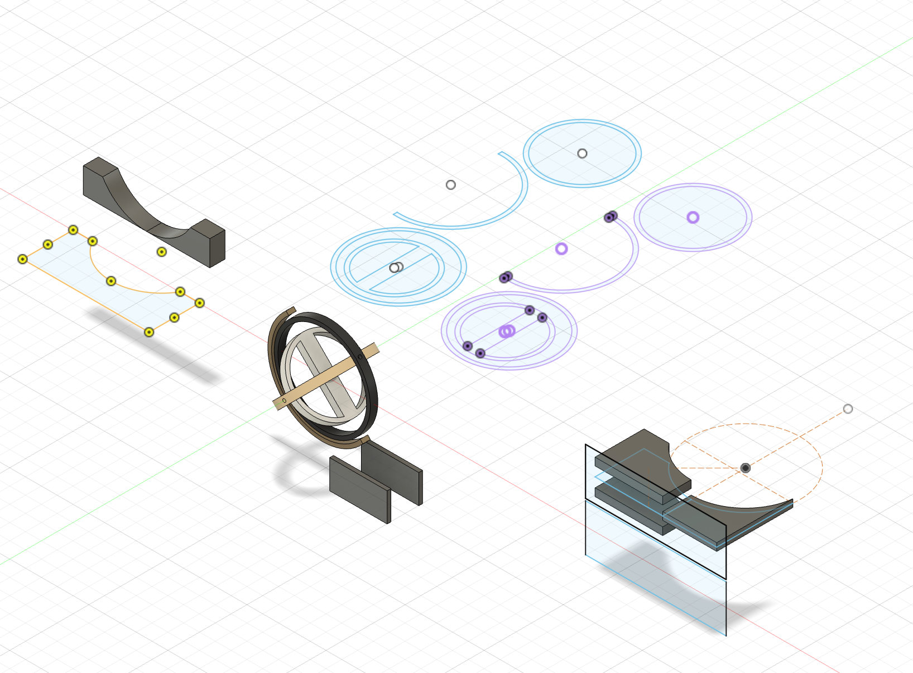

<div class="textcontainer">
<p class="margin"> </p>
<h2 align="center"><b><u>Final Project: Automatic Watch Gyroscope Winder</u></b></h2>
<p class="margin"></p>
<video width="300" controls muted autoplay style="display: block; margin: auto;">
<source src="demo.mp4" type="video/mp4">
Final Project Demo
</video>
<p></p>This is my final project - the Automatic Watch Gyroscope Winder! The concept was inspired by my automatic watch always dying whenever I didn't wear it
for a couple days. With this watch winder, I can now put my watch inside the winder and have it spinning 24/7 when not in use. The full design on Fusion included sketches and extrusions of each frame of the gyroscope mechanism, as well as the base and the housing of the motor and
circuitry.
<div class="flexrow"></div>
<p></p>The idea here is that the watch sits in the middle of the central frame, wrapped around the central wood support. Surrounding the watch are 4 frames
that all rotate on different axes, and the outmost frame is fixed to the base of the structure. To create the whole structure, I laser cut each part twice (out of plywood)
and glued them together for a combined thickness of 6mm---this way, there would be enough room for axle holes to be drilled into the sides of each frame.
<div class="flexrow"><img src="frames.png" alt="frames" style="width:30%" border="3px"></div>
<p></p>One challenge I faced was finding the right material for the gimbals, which are the axles that each frame turns on. I eventually settled on using wooden pegs
and plastic washers as spacers, which turned out to work surprisingly well.
<div class="flexrow"><img src="dowels.png" alt="frames" style="width:30%" border="3px"></div>
<p></p>After gluing all the piecees together, drilling the holes proved harder than expected. Positioning was everything, and I had to mark every hole with
a sharpie after centering and lining up the angles of each frame. Then, I glued pegs into the frames, making sure each gap in between the frames was
fitted with 3 plastic washers each. This configuration allowed the frames to spin with less friction, while also keeping the frames in place.
<p></p>My initial design for the base did not allow any room for the motor or circuitry. So, I re-designed it to have a little pocket of space for the motor.
I managed to position the motor in a great spot in between two of the housing pieces and glued it to the side of one of the pieces.
<div class="flexrow"><img src="motor.png" alt="motor" style="width:30%" border="3px"></div>
<p></p>Then, after gluing everything else in place, the next challenge was to have the gimbal line up with the motor axle, and then attaching it in a way
where the gear box motor could securely transfer the rotation to the gimbal. To do this, I first tried just using hot glue, but it eventually detatched.
Using a combination of hot glue and duct tape seemed to do the trick, though.
<p></p>Programming the ESP32 took a few iteraions of deciding what kind of movement I wanted out of the mechanism. I settled with randomizing the speed within
a certain range, as well as the time the motor was activated between different periods of movement. Here is the code:
<div class="container mt-3">
<div class="card bg-light p-3">
<pre style="font-family: 'Courier New', monospace; white-space: pre-wrap; overflow-x: auto;">
int A1A = 2; // PWM speed control pin
int A1B = 4; // Direction pin
int buttonPin = 21; // Button input pin
// Speed settings
const int MIN_SPEED = 180; // Updated minimum speed
const int MAX_SPEED = 240; // Updated maximum speed
const int BUTTON_SPEED = 180; // Constant speed when button is pressed
// Timing variables
unsigned long previousCheckTime = 0;
const int CHECK_INTERVAL = 5000; // Check less frequently (every 5 seconds) for pauses
const int MAX_STOP_TIME = 500; // Shorter max stop time (500ms)
unsigned long stopUntil = 0; // Time until motor should resume
unsigned long directionChangeTime = 0; // Time for next direction change
// State variables
bool isRunning = true;
bool forwardDirection = true;
int currentSpeed = 200; // Start with a mid-range speed
int directionChangeInterval = 0; // Variable interval for direction changes
void setup() {
// Configure pins
pinMode(A1A, OUTPUT);
pinMode(A1B, OUTPUT);
ledcAttach(A1A, 5000, 8); // Set up PWM on A1A pin
pinMode(buttonPin, INPUT_PULLUP);
// Initialize random seed
randomSeed(analogRead(0));
// Set initial time for direction change
setNextDirectionChangeTime();
}
void loop() {
unsigned long currentTime = millis();
// Check if button is pressed
int buttonState = digitalRead(buttonPin);
if (buttonState == LOW) {
// Button is pressed - run at constant speed
setMotor(BUTTON_SPEED, forwardDirection);
return; // Skip other logic while button is pressed
}
// Handle direction changes (more frequent, independent of pauses)
if (currentTime >= directionChangeTime) {
forwardDirection = !forwardDirection;
setNextDirectionChangeTime();
}
// Check if it's time to potentially stop the motor
if (isRunning && currentTime - previousCheckTime >= CHECK_INTERVAL) {
previousCheckTime = currentTime;
// 20% chance the motor will stop (less frequent pauses)
if (random(5) == 0) {
isRunning = false;
// Generate random stop time between 0 and MAX_STOP_TIME ms
int stopTime = random(MAX_STOP_TIME + 1);
stopUntil = currentTime + stopTime;
}
}
// Check if stop period is over
if (!isRunning && currentTime >= stopUntil) {
isRunning = true;
// Generate a new random speed when resuming
currentSpeed = random(MIN_SPEED, MAX_SPEED + 1);
}
// Randomly change speed occasionally when running
if (isRunning && random(100) < 5) { // 5% chance per loop to change speed
currentSpeed = random(MIN_SPEED, MAX_SPEED + 1);
}
// Set motor state
if (isRunning) {
setMotor(currentSpeed, forwardDirection);
} else {
setMotor(0, forwardDirection); // Stop the motor
}
}
// Helper function to set motor speed and direction
void setMotor(int speed, bool forward) {
ledcWrite(A1A, speed);
digitalWrite(A1B, forward ? LOW : HIGH);
}
// Set the next random time for direction change
void setNextDirectionChangeTime() {
// Change direction every 1-3 seconds
directionChangeInterval = random(1000, 3000);
directionChangeTime = millis() + directionChangeInterval;
}
</pre>
</div>
</div>
<p></p>The last step was to condense the breadboard configuration into a smaller circuitboard. Soldering it took a while but ended up successful on the
first try, which almost never happens (lfg!).
<div class="flexrow"><img src="circuitboard.png" alt="soldering" style="width:50%" border="3px"></div>
<p></p>The LAST last step was then to make the inner frame such that it could hold a watch securely. Making this happen was pretty simple - I just taped
a piece of foam around the middle piece to add some thickness/padding, and it worked out great.
<p></p>Future improvements could be made to the aesthetic (painting the wood, maybe) and housing the circuitboard better so that it's not visible.
<p></p>Thanks for reading to the end! I really enjoyed making this project!
</div>